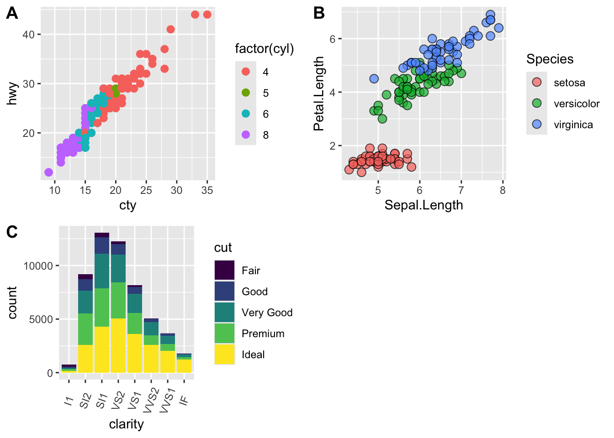
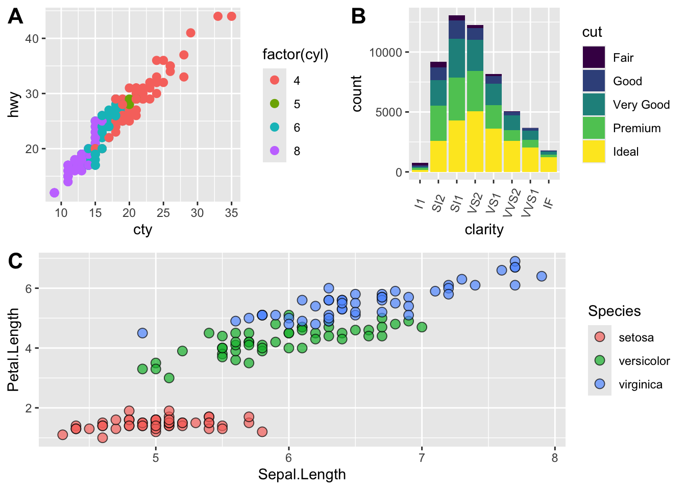

library(ggplot2)
ggplot(diamonds, aes(x = clarity, fill = cut)) +
geom_bar() +
theme(axis.text.x = element_text(angle=70, vjust=0.5)) +
scale_fill_viridis_d(option = "C") +
theme_classic()
This chapter is derived from the R-DAVIS (R-Data Analysis & Visualization In Science) course, which is licensed as follows:
Content from this course is derived and remixed from many sources in adherence with their respective licensing, the Creative Commons Attribution licence (CC BY 4.0). All content is copyrighted to its respective owners.
The source of the content for any particular lesson can be found at the bottom of each lesson’s website.
All original content is also licensed under the Creative Commons Attribution license. The full legal text of this license can be found at https://creativecommons.org/licenses/by/4.0/legalcode.
Accordingly this chapter is also licensed according the the CC by 4.0 license.
cowplotplotly packageThere are many tips and tricks that are available for the multitude of visualization packages in R. However, there aren’t as many simple rules or suggestions on what actually makes a good visualization. This starts with the “grammar of graphics”, which is the fundamental rules or principals which describe an art or science (from Wickham 2010).
“A good grammar will allow us to gain insight into the composition of complicated graphics, and reveal unexpected connections between seemingly different graphics (Cox 1978)”
Because there are so many options and methods to plot our data in R, we need to think about how we are going to represent the data, how can that data be interpreted visually, and what story it may tell.
A very nice example of this is provided by this animation (created by Darkhorse Analytics, and used in Jenny Bryan’s excellent stat545 course). It shows how simplification can make a big difference in communication.

One thing to consider is what the objective is when creating a visualization or plot. When we build plots for exploratory purposes, we already know what the variables are we are using, and the objective is more about what sort of patterns the data might show. When communicating, the objective is more about providing a stand-alone snapshot which helps others understand what you are trying to convey. We’ll cover more on this when we talk about Rmarkdown.
ggplot2While there are many visualization options in R, we believe the most comprehensive and powerful is the ggplot2 package. Much of the class has used/follows ggplot, so here’s a little background that might be useful.
ggplot2 as parts of a house.
ggplot(data=yourdata))geom_)aes())stat_)A questions we often get asked when helping students with ggplot figures is, how can I put two y-axis on my graph? Short answer, with ggplot, you can’t. There is a good reason for this though, which is basically that the creators of ggplot2 believe that duel y-axis are confusing, eaisly misunderstood and not invertible (given a point on the plot space, you can not uniquely map it back to a point in the data space). We agree with this logic, and would urge you to never put two differnt y-axis on the same plot. Instead, make two seperate graphs.
There are so many options in R. It is fun to play around with color, but keep in mind not everyone sees color in the same way, and some folks cannot see certain spectrums of color (i.e., absence of blue or green receptors is common). See below for a example of what colorblindness may do…if you see numbers inside these circles, great, you have some blue/green retinal receptors.


Having said that, here’s a great cheat sheet of colors in R, it can be handy when trying to find the correct color or name of a color. Check out this recent Nature perspective piece on The misuse of colour in science communication.
For a very nice discussion about color palettes, I recommend this page from the R cookbook folks.
Additionally, check out the great ggthemes package, which has many options. One I find very helpful is using scale_color_colorblind(), which if you have 8-9 categories, may be a nice way to display your data.
viridisThe viridis package is an excellent set of colors that better represent your data, are easier to read for those with colorblindness, and they also tend to print fairly well in grayscale.
Take a look at the vignette online!
An example:

The viridis color pallettes have been built into ggplot so that you can call upon them using the scale_fill_viridis_ or scale_color_viridis_ functions. Note that whether or not you use the fill or color scale function depends on which aesthetic you set in your plot. The functions also have extenstions depending on the kind of variable that you want to color: scale_fill_viridis_d is for discrete variables while scale_fill_viridis_c is for continous variables. Within the function, you can specify which virids pallette to use: A-D.
In this example we fill in our bars with the cut vairable in the diamond dataset, a categorical variable with 5 groups.
library(ggplot2)
ggplot(diamonds, aes(x = clarity, fill = cut)) +
geom_bar() +
theme(axis.text.x = element_text(angle=70, vjust=0.5)) +
scale_fill_viridis_d(option = "C") +
theme_classic()
This information isn’t meant to be comprehensive, but at minimum, it may provide some guidance when you are creating plots and figures.
The most basic tip is keep it simple! Stick with a clean and clear message, what is your plot/figure trying to get across? Data visualization is effective when it is simple, and repackages data into a visual story that is easy to understand.
A few things to avoid (which basically relates to keeping it simple):
One of the best simple plots for examining patterns in data, but very effective. Also used when adding model trend lines.
suppressPackageStartupMessages(library(ggplot2))
plot(x=iris$Petal.Width) # single variable
plot(x=iris$Petal.Width, y=iris$Petal.Length) # multiple variables
ggplot() + geom_point(data=iris, aes(x=Petal.Width, y=Petal.Length))
ggplot() + geom_point(data=iris, aes(x=Petal.Width, y=Petal.Length, fill=Species), pch=21, size=3, alpha=0.5)
Comparing relative change in quantities across a variable like time. Note the change when we avoid facetting each line independently.
plot(EuStockMarkets)
suppressPackageStartupMessages(library(tidyverse))
EuStockMarkets_df <- data.frame(as.matrix(EuStockMarkets), date=as.numeric(time(EuStockMarkets)))
EuStockMarkets_long <- gather(data = EuStockMarkets_df, key = "Market", value="value", 1:4)
ggplot() + geom_line(data=EuStockMarkets_long, aes(x=date, y=value, color=Market))
Comparing totals across multiple groups. Notice legibility when you stack the bars.
# code adpated from https://www.analyticsvidhya.com/blog/2015/07/guide-data-visualization-r/
suppressPackageStartupMessages(library(viridis))
barplot(iris$Petal.Length)
barplot(iris$Sepal.Length,col = viridis(3, option = "A")) 
barplot(table(iris$Species,iris$Sepal.Length),col = viridis(3, option = "A")) 
Discussions of visualization so far have taken for granted that visualization is accessible to everyone, but researchers and audiences alike are not all sighted. RStudio is behind on blind accessibility, but some packages can provide text descriptions and sonification/audification of plots to improve accessibility for non-visual data interaction.
The BrailleR package (read more here), has a VI() function that wraps around plots and provides a text-description output. We can use the VI wrapper to interact with our plots from a textual perspective and identify what information is missing. Such text can also be used as alt-text when publishing this material. What could we do to our plot to improve the text description?
#install.packages("BrailleR")
library(BrailleR)
barplot <- ggplot(diamonds, aes(x = clarity, fill = cut)) +
geom_bar() +
theme(axis.text.x = element_text(angle=70, vjust=0.5)) +
scale_fill_viridis_d(option = "C") +
theme_classic()
VI(barplot)This is an untitled chart with no subtitle or caption.
It has x-axis 'clarity' with labels I1, SI2, SI1, VS2, VS1, VVS2, VVS1 and IF.
It has y-axis 'count' with labels 0, 5000 and 10000.
There is a legend indicating fill is used to show cut, with 5 levels:
Fair shown as vivid purplish blue fill,
Good shown as vivid purple fill,
Very Good shown as vivid purplish red fill,
Premium shown as brilliant orange fill and
Ideal shown as brilliant greenish yellow fill.
The chart is a bar chart with 8 vertical bars.
These are stacked, as sorted by cut.The sonification package’s sonify function can be used to represent data in audio form, where the x-axis can span sound across time, so that the length of time a sound plays follows the data long the x-axis from left to right; the y-axis can be expressed as pitch, so that the pitch of the sound matches to the values of the data (lower value = lower pitch).
One variable can be used as an input to hear the distribution. For instance this univariate plot of iris petal width visually looks like this:
plot(iris$Petal.Width)
Using sonify instead of plot, the distribution of iris petal width sounds like this:
#install.packages("sonify")
library(sonify)
sonify(iris$Petal.Width, play = FALSE)If you try this on your computer it should play autmatically, buy on the website you can listen below:
Two variables can be used as input to hear the relationship between continuous variables. For instance this bivariate plot of iris petal length and petal width visually looks like this:
plot(x = iris$Petal.Width, y = iris$Petal.Length)
And using sonify, sounds like this:
sonify(x=iris$Petal.Width, y = iris$Petal.Length, play = FALSE) cowplotA few excellent options exist for creating multi-paneled plots for publications. The first and foremost is a package by Claus Wilke called cowplot. With cowplot, it’s possible to quickly combine existing ggplots, creating publication quality plots. See the vignette for more options, but here’s a quick example from the vignette below:
library(cowplot)
Attaching package: 'cowplot'The following object is masked from 'package:lubridate':
stamp# make a few plots:
plot.diamonds <- ggplot(diamonds, aes(clarity, fill = cut)) +
geom_bar() +
theme(axis.text.x = element_text(angle=70, vjust=0.5))
#plot.diamonds
plot.cars <- ggplot(mpg, aes(x = cty, y = hwy, colour = factor(cyl))) +
geom_point(size = 2.5)
#plot.cars
plot.iris <- ggplot(data=iris, aes(x=Sepal.Length, y=Petal.Length, fill=Species)) +
geom_point(size=3, alpha=0.7, shape=21)
#plot.iris
# use plot_grid
panel_plot <- plot_grid(plot.cars, plot.iris, plot.diamonds, labels=c("A", "B", "C"), ncol=2, nrow = 2)
panel_plot
# fix the sizes draw_plot
fixed_gridplot <- ggdraw() + draw_plot(plot.iris, x = 0, y = 0, width = 1, height = 0.5) +
draw_plot(plot.cars, x=0, y=.5, width=0.5, height = 0.5) +
draw_plot(plot.diamonds, x=0.5, y=0.5, width=0.5, height = 0.5) +
draw_plot_label(label = c("A","B","C"), x = c(0, 0.5, 0), y = c(1, 1, 0.5))
fixed_gridplot
patchworkThe patchwork R library can also be used to assemble multi-part figures.
Getting Started with Patchwork: https://patchwork.data-imaginist.com/articles/patchwork.html
library(patchwork)
Attaching package: 'patchwork'The following object is masked from 'package:cowplot':
align_plotsplot.diamonds + plot.cars
(plot.diamonds | plot.cars) / plot.iris
Tags can be easily added to a set of plots, using the plot_annotation command:
plots <- (plot.diamonds | plot.cars) / plot.iris
plots + plot_annotation(tag_levels = 'A')A plot you created with ggplot or another plotting package can be saved as .JPEGS (or .tiff, .img, etc) onto you. For any ggplot objects, we recommend using ggsave.
First, let’s create a new folder in this project called figures. Let’s save all the figures we create to that folder. ggsave will default to saving the last plot you created, however, we think it is always a good idea to specify exactly which plot you want saved. To do that, we have to save our plot as an object.
ggsave("figures/gridplot.png", fixed_gridplot)ggsave you can save images asggsavescale can scale the image (multiplicative scaling factor)width and height let you specify the size of the image in units that you specifydpi can change the quality of the image; for publication graphs we suggest over 700 dpiggsave("figures/gridplot.png", fixed_gridplot, width = 6, height = 4, units = "in", dpi = 700)plotly graphicsplotlyThe package plotly is an excellent, easy to use resource that allows you to quickly create interactive, web-based figures. We have used plotly to illustrate patterns in data to collaborators, to visualize patterns in our data during the pre-analysis stage, and even impress with “fancy” graphics during a conference talk!
Let’s try plotly together using some of the iris data:
library(plotly)
plot.iris <- ggplot(data=iris, aes(x=Sepal.Length, y=Petal.Length, fill=Species)) +
geom_point(size=3, alpha=0.7, shape=21)
plotly::ggplotly(plot.iris) #it's as simple as that! It is possible to customize the labels using the ggplot2 text aesthetic to provide more information.
Example at this link: https://www.littlemissdata.com/blog/interactiveplots
Shiny is an R library for building interactive web apps with R.
Example at this link: https://shiny.rstudio.com/tutorial/written-tutorial/lesson1/
Heinsberg LW, Koleck TA, Ray M, Weeks DE, Conley YP. Advancing Nursing Research Through Interactive Data Visualization With R Shiny. Biological Research For Nursing. 2022 Aug 26;109980042211211. DOI: https://doi.org/10.1177/10998004221121109
Example at this link: https://lwheinsberg.shinyapps.io/NurShinyExample1/
GitHub repository: https://github.com/lwheinsberg/NurShiny
The BDNF DNA Methylation Map:
https://lwheinsberg.shinyapps.io/BDNF_DNAmMap/
Interactively explore the data assembled during the writing of this systematic review:
Treble-Barna A, Heinsberg LW, Stec Z, Breazeale S, Davis TS, Kesbhat AA, Chattopadhyay A, VonVille HM, Ketchum AM, Yeates KO, Kochanek PM, Weeks DE, Conley YP. Brain-derived neurotrophic factor (BDNF) epigenomic modifications and brain-related phenotypes in humans: A systematic review. Neurosci Biobehav Rev. 2023 Apr;147:105078. PMID: 36764636 PMCID: PMC10164361 DOI: https://doi.org/10.1016/j.neubiorev.2023.105078
This lesson is adapted from the Software Carpentry: R for Reproducible Scientific Analysis Vectors and Data Frames materials and the Data Carpentry: R for Data Analysis and Visualization of Ecological Data Exporting Data materials.